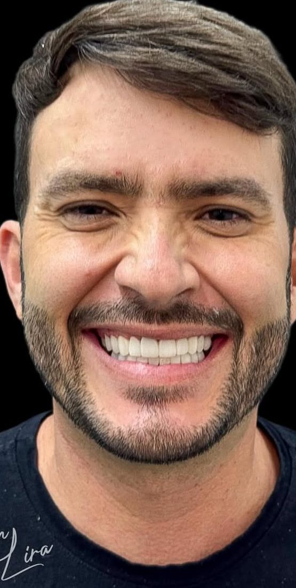

Nossa especialidade
Facetas
Em resina estratificada premium ou em porcelana. Corrigem cor, forma, tamanho e alinhamento com naturalidade, camada por camada, para que ninguém perceba o tratamento, só o sorriso.
Quero avaliar meu caso